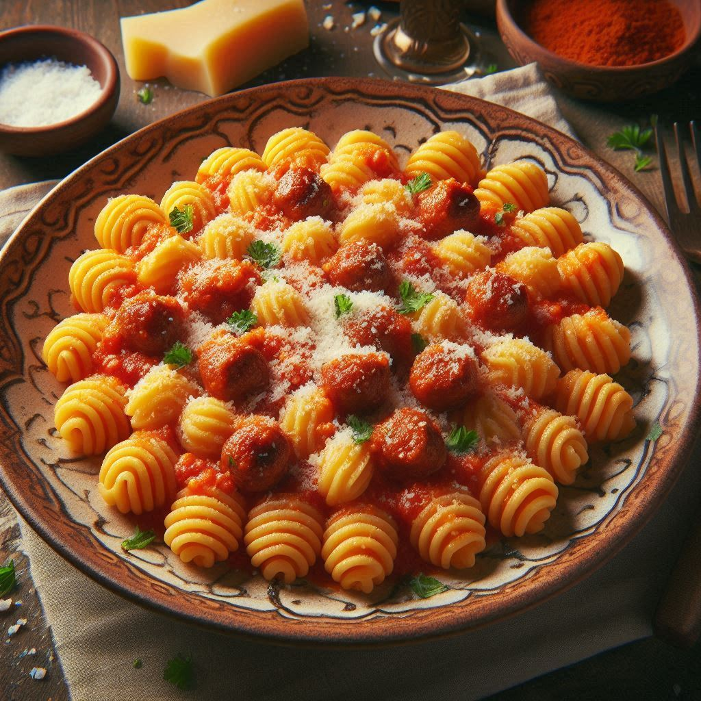

Malloreddus alla Campidanese

Description
Malloreddus alla Campidanese is a signature, traditional Sardinian pasta dish originating from the Campidano region, in the south. It is a quintessential Sardinian comfort food often served on Sundays or special occasions, featuring small, ridged, shell-shaped semolina pasta (malloreddus) tossed in a rich, savory pork sausage, lamb and tomato ragù. this is AI slop.
Ingredients
Dough
- 300g semolina flour
- 160 ml warm water
- a few saffron threads, seeeped in the warm water
- a pinch of salt
Sauce
- 300g Pork Sausage (preferably with fennel), skins removed and crumbled.
- 250g lamb belly, diced small
- 400g Tomato passata
- Another pinch of saffron, steeped in a bit of water
- Half a glass of dry white wine
- A small onion, finely chopped
- A garlic clove, finely chopped
- A bayleaf
- Pecorino sardo, grated
- A couple of torn basil leaves
Method:
For the Malloreddus
- Mix flour and saffron-water into a smooth, elastic dough (approx. 10 mins). Let rest for 30 minutes.
- Divide dough into thin ropes (about 1cm thick) and cut into 1cm pieces.
- ress each piece against a gnocchi board or the back of a fork with your thumb, rolling it away to create a ridged curl.
For the Sauce:
- Put the lamb belly on the pan on very low flame to render the fat.
- Add the onion and garlic in olive oil to sweat in the . Add the crumbled sausage and cook until well-browned.
- Deglaze: Pour in white wine and let it evaporate.
- Stir in the tomato passata, steeped saffron, and bay leaf. Cover and simmer on low for at least 30–60 minutes until thick.
- Cook the malloreddus in salted boiling water (about 3 mins for fresh, 10–12 for dried). Drain and toss directly into the ragu.
- Stir in a generous handful of Pecorino Sardo and fresh basil before serving.
Buon appetito!
Home